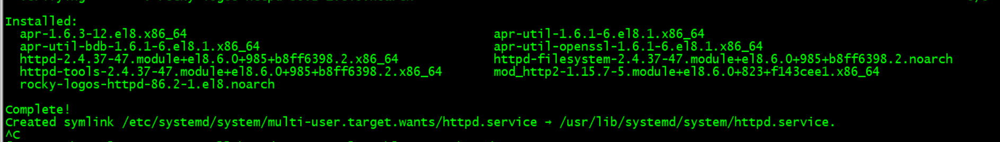
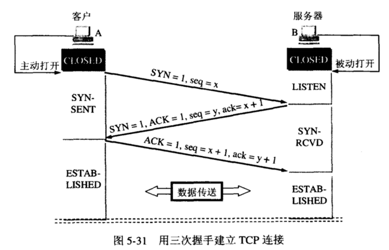
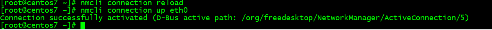

第三周作业
背景
搭建私有yumEPEL仓库服务器
在部分情况下，终端不能具有上网功能，但需要下载软件包，此时可以通过搭建本地yum的服务器来实现软件包的本地下载，客户端无需访问互联网，提高了安全性
1.服务器需要关闭SELlinux和防火墙功能
1 | |
2.安装httpd工具并开启功能：
1 | |
在/var/www/html/目录下提供http服务

开启httpd服务后可以在客户端上访问本机ip提供的http服务
3.下载rpm包及其元数据到服务器上
1 | |
4.在其他机器上可以设置路径为服务器地址的私有库
1 | |
改完后可以用yum repolist命令查看epel源是否已经配置完成
1 | |
TCP三次握手和四次挥手
TCP三次握手

详述：
Client端发送连接请求报文，Server段接受连接后回复ACK报文，并为这次连接分配资源。Client端接收到ACK报文后也向Server段发生ACK报文，并分配资源，这样TCP连接就建立了。
最初两端的TCP进程都处于CLOSED关闭状态，A主动打开连接，而B被动打开连接。（A、B关闭状态CLOSED——B收听状态LISTEN——A同步已发送状态SYN-SENT——B同步收到状态SYN-RCVD——A、B连接已建立状态ESTABLISHED）
- B的TCP服务器进程先创建传输控制块TCB，准备接受客户进程的连接请求。然后服务器进程就处于LISTEN（收听）状态，等待客户的连接请求。若有，则作出响应。
- 1****）第一次握手：A的TCP客户进程也是首先创建传输控制块TCB，然后向B发出连接请求报文段，（首部的同步位SYN=1，初始序号seq=x），（SYN=1的报文段不能携带数据）但要消耗掉一个序号，此时TCP客户进程进入SYN-SENT（同步已发送）状态。
- 2****）第二次握手：B收到连接请求报文段后，如同意建立连接，则向A发送确认，在确认报文段中（SYN=1，ACK=1，确认号ack=x+1，初始序号seq=y），测试TCP服务器进程进入SYN-RCVD（同步收到）状态；
- 3****）第三次握手：TCP客户进程收到B的确认后，要向B给出确认报文段（ACK=1，确认号ack=y+1，序号seq=x+1）（初始为seq=x，第二个报文段所以要+1），ACK报文段可以携带数据，不携带数据则不消耗序号。TCP连接已经建立，A进入ESTABLISHED（已建立连接）。
- 当B收到A的确认后，也进入ESTABLISHED状态。
TCP四次挥手

详述：
假设Client端发起中断连接请求，也就是发送FIN报文。Server端接到FIN报文后，意思是说”我Client端没有数据要发给你了”，但是如果你还有数据没有发送完成，则不必急着关闭Socket，可以继续发送数据。所以你先发送ACK，”告诉Client端，你的请求我收到了，但是我还没准备好，请继续你等我的消息”。这个时候Client端就进入FIN_WAIT状态，继续等待Server端的FIN报文。当Server端确定数据已发送完成，则向Client端发送FIN报文，”告诉Client端，好了，我这边数据发完了，准备好关闭连接了”。Client端收到FIN报文后，”就知道可以关闭连接了，但是他还是不相信网络，怕Server端不知道要关闭，所以发送ACK后进入TIME_WAIT状态，如果Server端没有收到ACK则可以重传。“，Server端收到ACK后，”就知道可以断开连接了”。Client端等待了2MSL后依然没有收到回复，则证明Server端已正常关闭，那好，我Client端也可以关闭连接了。Ok，TCP连接就这样关闭了！
数据传输结束后，通信的双方都可释放连接，A和B都处于ESTABLISHED状态。（A、B连接建立状态ESTABLISHED——A终止等待1状态FIN-WAIT-1——B关闭等待状态CLOSE-WAIT——A终止等待2状态FIN-WAIT-2——B最后确认状态LAST-ACK——A时间等待状态TIME-WAIT——B、A关闭状态CLOSED）
- 1）A的应用进程先向其TCP发出连接释放报文段（FIN=1，序号seq=u），并停止再发送数据，主动关闭TCP连接，进入FIN-WAIT-1（终止等待1）状态，等待B的确认。
- 2）B收到连接释放报文段后即发出确认报文段，（ACK=1，确认号ack=u+1，序号seq=v），B进入CLOSE-WAIT（关闭等待）状态，此时的TCP处于半关闭状态，A到B的连接释放。
- 3）A收到B的确认后，进入FIN-WAIT-2（终止等待2）状态，等待B发出的连接释放报文段。
- 4）B没有要向A发出的数据，B发出连接释放报文段（FIN=1，ACK=1，序号seq=w，确认号ack=u+1），B进入LAST-ACK（最后确认）状态，等待A的确认。
- 5）A收到B的连接释放报文段后，对此发出确认报文段（ACK=1，seq=u+1，ack=w+1），A进入TIME-WAIT（时间等待）状态。此时TCP未释放掉，需要经过时间等待计时器设置的时间2MSL后，A才进入CLOSED状态。
centos和Ubantu静态配置网卡IP
centos配置IP
我使用的是centos7版本，可以在/etc/sysconfig/network-scripts/ifcfg-eth0文件里修改ip地址
1 | |
修改BOOTPROTO=”static”，之后可以将新的ip地址赋给IPADDR，网络掩码赋给PREFIX，修改完成以后保存退出
立即生效：
1 | |

查看修改后的ip地址：
1 | |

Ubantu网卡IP
Ubantu的网卡配置文件采用YAML格式以/etc/netplan/xxx.yaml文件命名方式存放
1 | |
配置文件修改完成后使用 netplan apply 命令生效
1 | |
查看修改后的ip地址：
脚本实现expect免密登录
要求
1）通过shift读取脚本参数
2）通过select来选择功能.例如功能有
- 安装mysql
- 安装apache
- 免密钥登陆主机
当前我们只实现免密钥登陆主机
3）通过函数封装每个功能
4）将免密钥登陆的过程可以重复进行, while 循环实现重复，需要有退出过程。当用户输入exit时，退出免密钥功能。
5）支持输入一批主机免密钥，使用数组实现
脚本实现
1 | |
本博客所有文章除特别声明外，均采用 CC BY-SA 4.0 协议 ，转载请注明出处！